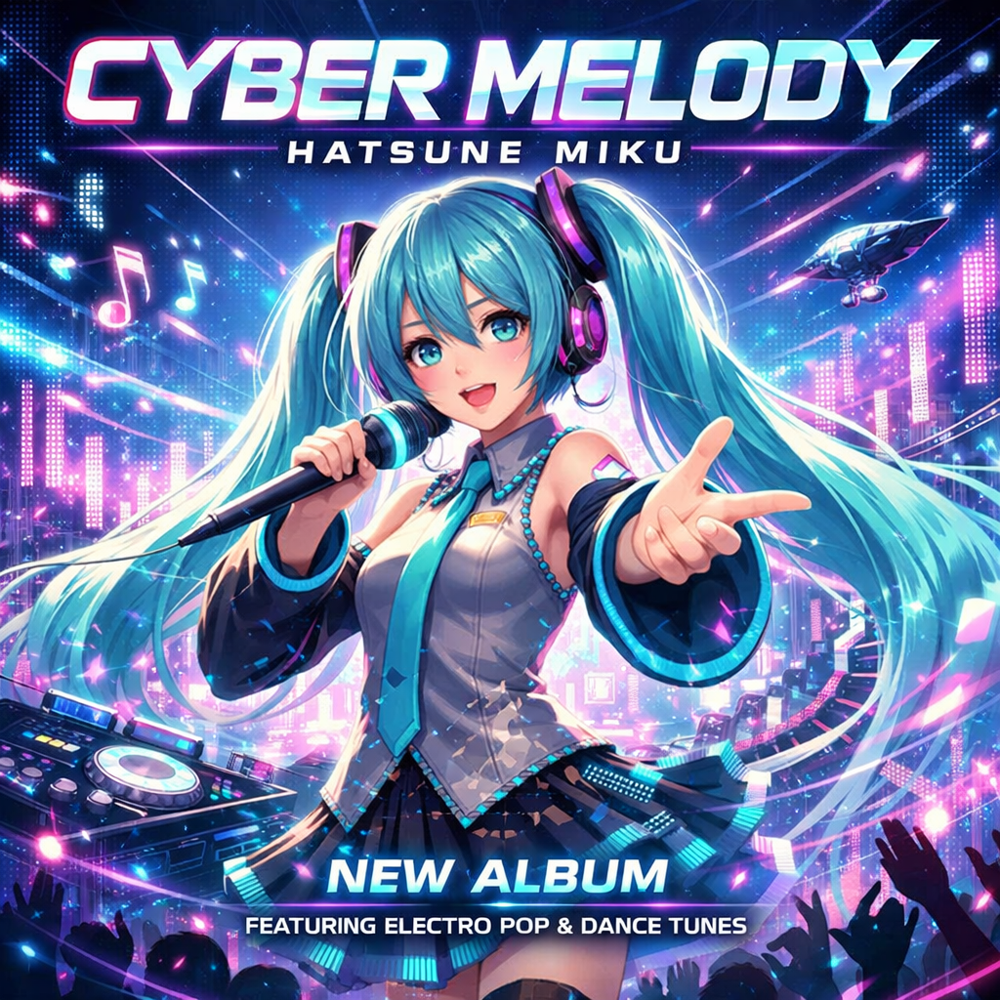
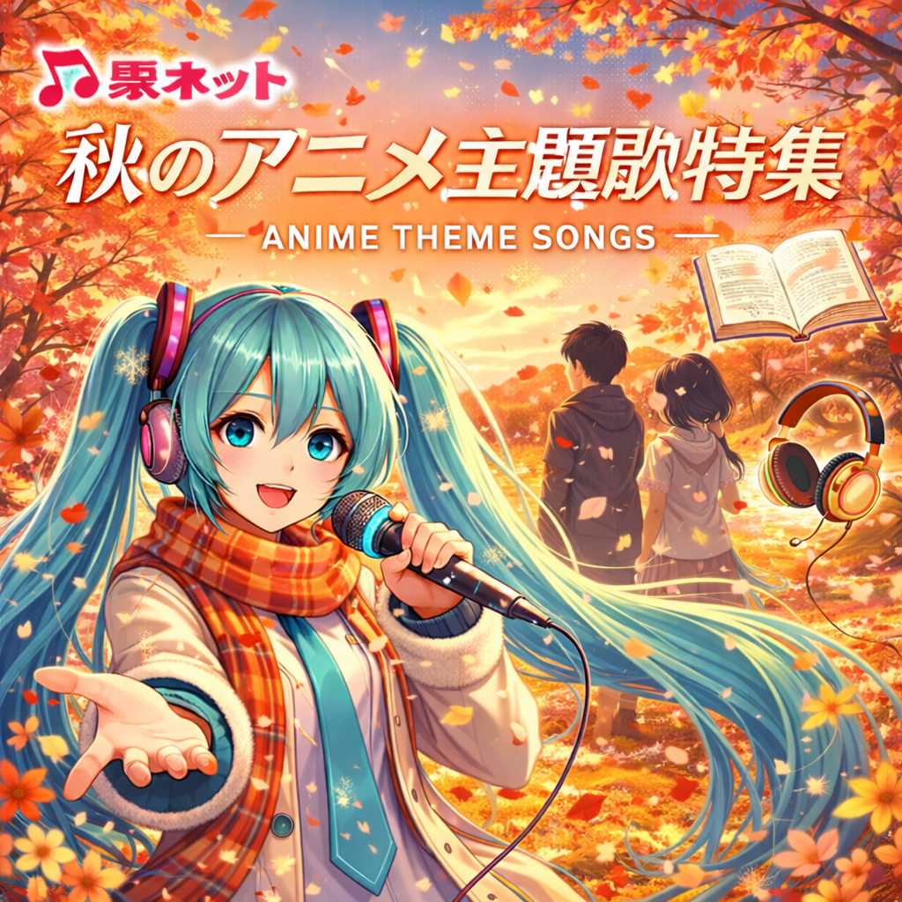

🔈プレイリスト 2026/05/31 22時作成
| 1 |
 |
【うたさちHDD】新譜一覧.html |
| もちからHDDに新しく追加された新譜の一覧です。プレイリストに統合しました。 最新のアニメタイアップは uta-netアニメ一覧 を参照ください |
||
| 2 |
 |
【うたさちHDD】ファイル一覧(動画).html |
| すべての動画一覧(mp4など)、ブラウザの検索機能(CTRL+F)でファイルを探してください ファイルサイズが巨大なのでご注意ください |
||
| 3 |
 |
【うたさちHDD】ファイル一覧(mp3).html |
| すべての音声ファイル一覧(mp3)、ブラウザの検索機能(CTRL+F)でファイルを探してください ファイルサイズが巨大なのでご注意ください |
||
| 4 |
 |
【うたさちHDD】過去回セットリスト.html |
| 過去のもちからOFFで歌われた曲のリストです、コロナ後の2024/04/27のoffから記録 以前にどんな曲が歌われたのかな、というときはこちらを参照ください |
||
| 5 |
 |
uta-netアニメ01月～03月（冬）.html |
| 2026年1月期（第１クォーター） uta-netのTV ANIME SONGSに掲載されたOP曲、ED曲の一覧です |
||
| 6 |
 |
uta-netアニメ04月～06月（春）.html |
| 2026年4月期（第２クォーター） uta-netのTV ANIME SONGSに掲載されたOP曲、ED曲の一覧です |
||
| 7 |
 |
uta-netアニメ07月～09月（夏）.html |
| 2025年7月期（第３クォーター） uta-netのTV ANIME SONGSに掲載されたOP曲、ED曲の一覧です |
||
| 8 |
 |
uta-netアニメ10月～12月（秋）.html |
| 2025年10月期（第４クォーター） uta-netのTV ANIME SONGSに掲載されたOP曲、ED曲の一覧です |
||
| 9 |
 |
THE FIRST TAKE.html |
| ■RULES 白いスタジオに置かれた一本のマイク。ここでのルールはただ一つ。一発撮りのパフォーマンスをすること。 ■STATEMENT 一発撮りで切りとる。今という時間と、今しか出せない音を。 THE FIRST TAKE この瞬間は、二度とない。 |
||
| 10 |
|
THE FIRST TAKE アニメテーマソングス.html |
| ■RULES 白いスタジオに置かれた一本のマイク。ここでのルールはただ一つ。一発撮りのパフォーマンスをすること。 ■STATEMENT 一発撮りで切りとる。今という時間と、今しか出せない音を。 人気アニメの主題歌が一発撮りの緊張感の中で披露され、多くの動画が1,000万回再生を超える人気コンテンツとなっています。 |
||
| 11 |
 |
アニソン！.html |
| 今もっともアツい日本のアニメソング（アニソン）を一つのプレイリストに。 YouTube Music 公式 自動生成 Mix / Radio（RD系）プレイリスト |
||
| 12 |
 |
アニソンベスト Animes Biggest Hits.html |
| 歴代のアニソンから、最も聞かれたスーパー・ヒッツをまとめてお届け。 YouTube Music 公式 自動生成 Mix / Radio（RD系）プレイリスト |
||
| 13 |
 |
アイドルマスター 765PRO ALLSTARS.html |
| 比較的新しい3Dモデルのゲームなどの動画を背景にした、日本コロムビア 公式YouTubeチャンネルの全103曲 タイミングは多少同期させましたが、フル尺の曲にショート分の動画を付与しているので２番から合わなくなるのはご容赦ください |
||
| 14 |
 |
ラブライブ!スーパースター!! Liella!.html |
| ラブライブ！シリーズ公式チャンネル 自動生成チャンネル曲まとめプレイリスト ライブ映像を背景動画にした LiveBGV が大部分。一部 AnimeMV もあり。 |
||
| 15 |
 |
ぼっち・ざ・ろっく！ 結束バンド.html |
| はまじあき原作の漫画『ぼっち・ざ・ろっく！』及びそのアニメ化作品に登場する、劇中の同名ガールズバンドを再現した音楽ユニット レーベルはアニプレックス。 |
||
| 16 |
 |
ウマ娘 プリティーダービー.html |
| プレイリスト ウマ娘 キャラソン 全曲 | Uma Musume Pretty Durby 公式動画ループ、非公式MAD、ライブシアター動画などを背景にカラオケ |
||
| 17 |
 |
超かぐや姫！.html |
| 日本最古の物語『かぐや姫』 × 豪華ボカロP 新時代の音楽アニメーションプロジェクト、開幕！ 新進気鋭のクリエイターたちが繰り広げる壮大なライブ・エンターテイメントが今、始まる。 |